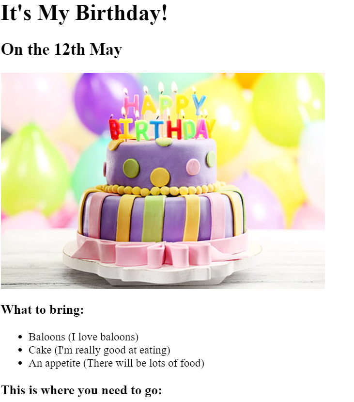

Yousef Almanee's Profile
I'm a Web Develpoer
Movie Ranking Project
The Best Movie According to Yousef
My top 3 movies of all-time.
Intersteller
best space movie
Fight club
Best movie plot twist.
Whiplash
Best musical movie everr!!!!
Ir's My Birthday!
On the 12th May

What to bring:
About me
Contact me